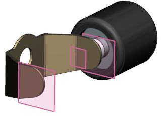
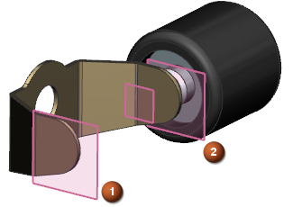
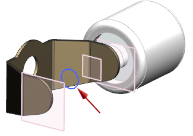

查看设计装配
-
点击标准工具条上的打开
 。
。 -
在打开对话框中，点击选项。
-
在装配加载选项对话框中，设置如下参数：
部件版本组：
-
加载 = 从文件夹
范围组：
-
加载 = 所有组件
-
使用部分加载 =

-
使用轻量级表示 =

-
加载部件间数据 =
-
-
点击确定。
-
打开 wav3_slot_car_design_assembly。

-
在装配导航器中，展开设计装配(design assembly)节点。
这个设计装配中包含玩具车(slot car)后端的一些零件。设计装配是只用于设计产品的装配，您将不使用产品装配，它主要用于绘制产品装配图纸。当您的部件中含有共享特征，或者典型的产品装配与子装配会阻碍设计过程时，使用设计装配。
部件文件 wav3_slot_car_axle_rear_tube 当前为空，标记为1和2的基准平面隶属于设计装配，这些基准平面是您将在这个练习中创建的轴管的边界。

-
将发动机支架(motor bracket)设为工作部件。
将显示一个草图曲线，您将使用它来创建位于发动机支架中的孔。
